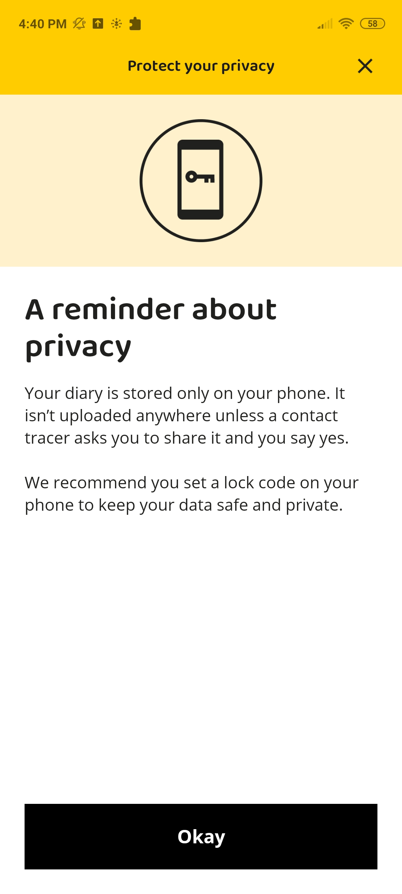

Apps such as NZ COVID tracer require large amounts of personal data in order to work effectively. The app contains location tracking capabilities and can use your NHI number if given permission. This information could be a cause for concern if it was no longer private. As described by Ahmed et al. (2020), it is assumed that the real identities of users who test positive for COVID-19 are already known to health authorities as a preventative measure to stop fake data from being recorded and uploaded, and while being necessary in order to properly establish the application, may be racing ahead and not accounting for errors.
The NZ COVID tracer app contains a reminder about privacy that ensures the user that diary information is stored locally on the device and will not be uploaded unless the user has given permission. They suggest using a device lock in order to keep personal data safe. As this can be quite important and private data, a built-in app lock for the COVID tracer could be implemented in order to help users feel more confident about using the app. An important part of a tracing app is ensuring users actually feel comfortable using the app and while doing so, that they use it properly and effectively. As mentioned by Bengio, et al., (2020) in regards to covid tracing applications “most of the applications in use or under consideration have an impact on individual privacy that democratic societies would normally consider to be unacceptably high.” A reminder such as the one below is important to lower the risk that a person stops using the app and further expanded on by Bengio et al. as “Public trust in the use of these applications is paramount because widespread adoption of these technologies is needed to be effective in curbing viral transmission.”

Bugs within the app can form the base for a data breach allowing for exploits where individuals could gain access to data from other users. This is an important factor due to the nature of information stored as previously highlighted. Centralized app architecture is described by Ahmed, Michelin, R. A., Xue, W., Ruj, S., Malaney, R., Kanhere, S. S., & Jha, S. K (2020) in A survey of covid-19 contact tracing apps “In a centralized architecture, the servers have access to all three types of data. Therefore, if access to the servers is compromised by malicious users, it would be possible to identify all individuals and their contacts, therefore jeopardizing their privacy.” Applications based on this architecture therefore require high server security in order to keep user data safe. Centralized architecture has further implications as described by Herries (2020) in the COVID-19 strategic response, as the contact tracer knows close contacts to the user this information can be used to identify illegal acts or other explicit dealings. This fact may discourage some people from properly using the application, therefore negating the purpose of it. In this case, decentralized app architecture could prove to be more beneficial, but would place higher trust in the user to keep their data confidential and secure as “The server plays a limited role compared to the centralized architecture.” (Ahmed et al., 2020) and further discussing the consequences of smartphone theft as private data stored on the device is no longer secure, an issue with all architecture used.
Made 5th June 2021